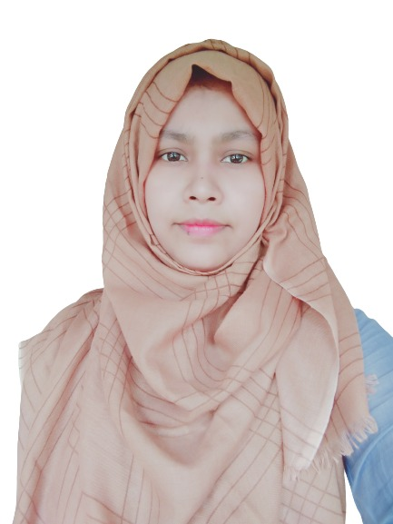

About Me

Assalamualikum , I am Kaniz Fatima. My nickname is Prome. Currently I am a student and I am studying in Computer Science and Engineering at Daffodil International University. My home town is Chapai Nawabgonj, Rajshahi. I have passed my SSC examination from Kashiabari High School and HSC examination from Chapai Nawabgonj Govt. Women’s College. Computer Science is my favourite subject .And I love to code and also I love to solve problems in a easiest way. I love to learn and also to teach. In a few years I have learnt C, Java and also solve many problems. Now I am learning Python, Data Science and Machine Learning. My interested fields are Artificial Intelligence, Machine Learning, Data Science, IOT, HCI etc.My AIM in life is to become a teacher. My current CGPA is 3.83 and I am trying to do better.Besides studies I love to Cooking, Watching movies, playing mobile games and also gardening. Moreover Cooking is my passion and whenever I get time I cook for my family and whom I love.